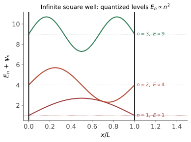
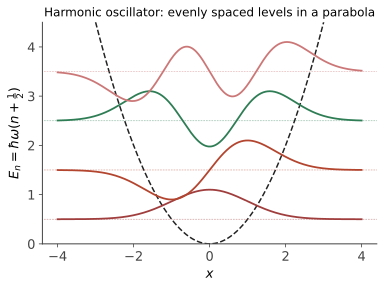

本页目录
量子 II · 一维问题与谐振子
对标：Griffiths §2 ｜ 前置：qm-01、ode-02 一维定态问题是量子直觉的训练场：束缚态的量子化、隧穿的指数律。压轴是谐振子的升降算符解法——不解任何微分方程、纯代数摘下全部能谱：量子力学最优雅的三页纸，也是场论（qft-01"粒子 = 激发量子"）的原型。
学习层：无限维的精确阶梯，有限图从哪一层开始撒谎？
1. 先预测：能级、节点和顶端边界
先在无量纲单位 \(\hbar=m=\omega=1\) 下预测：
- \(E_{n+1}-E_n\) 是常数 \(1\) 还是随 \(n\) 增长？
- \(a^\dagger|n\rangle\) 的系数是 \(n+1\) 还是 \(\sqrt{n+1}\)？\(|n\rangle\) 的波函数有几个节点？
- 基态与激发态的归一化、\(\sigma_x\sigma_p\) 是否仍能逐项写出精确账本？
- 把 Fock 空间截成 \(|0\rangle,\ldots,|N-1\rangle\) 后，顶端 \(|N-1\rangle\) 的升算符和 \([a_N,a_N^\dagger]=1\) 会不会仍然无条件成立？
2. 精确账本：升降算符与波函数是同一套结构
在上述单位制中
所以
位置表象的精确函数为
其中 \(H_n\) 是物理学家 Hermite 多项式；从 \(n=0\) 的基态开始编号，第 \(n\) 个束缚态有恰好 \(n\) 个实节点，并满足 \(\int_{-\infty}^{\infty}|\psi_n|^2dx=1\)。实验用有限 \([-X,X]\) 网格近似这些量，同时把解析值并排放入账本。
3. 有限 Fock 图：可计算，不等于无限维定理
在 \(N\) 维截断中，顶层升算符被丢掉：
因此 \(n<N-1\) 的能级和升降系数可以忠实复现，但顶层会留下边界残差；用 \(H_N=(a_N^\dagger a_N+a_Na_N^\dagger)/2\) 计算顶层时，能量也会显示截断伪影。有限网格还会丢掉 \(|x|>X\) 的高斯尾。图和数值只是在有限图上核对精确公式，不能证明无限 Hilbert 空间的完备谱定理，也不能把截断边界当成物理墙。
4. 动手实验：先锁定判断，再揭开两张账
揭示后可调激发数 \(n\)、截断维数 \(N\) 和位置窗口 \(X\)。波函数图标出节点与有限窗口；账本同时列出精确能级、有限矩阵能级、归一化、节点数、不确定性和顶端换算子残差。
无 JavaScript 时的静态读法： 默认取 \(\hbar=m=\omega=1\)、\(n=2\)、\(N=12\)。无限维精确答案是
| 项目 | 精确账本 | 有限模型的读法 |
|---|---|---|
| 能级 | \(E_2=2.5\) | \(n<N-1\) 时 \(H_N\) 给同值；顶层会有截断误差 |
| 升算符 | \(a^\dagger\lvert2\rangle=\sqrt3\lvert3\rangle\) | 若 \(2<N-1\)，系数保留 |
| 归一化 | \(\int\lvert\psi_2\rvert^2dx=1\) | 有限 \(X\) 网格只差尾部与求积误差 |
| 节点 | 恰好 \(2\) 个 | 网格要足够覆盖零点，不能用稀疏图数节点 |
| 不确定性 | \(\sigma_x\sigma_p=2.5\) | 解析列是定理；网格列是数值检查 |
| 截断边界 | \([a_N,a_N^\dagger]-I_N\) 只在顶层不为零 | 顶层残差是模型边界，不是量子力学新定律 |
有限图负责可复算的诊断；能级等间距、归一化和节点定理仍属于无限维模型及其定义域。
5. 迁移问题：从谐振子回到一般一维势
任意光滑势阱的极小值附近可用谐振子近似，但有限深阱还要处理指数尾和边界匹配，隧穿率也依赖势垒积分而不是谐振子的等间距谱。请在换势、换边界或换基底时，分别标注“精确代数结果”“数值截断结果”和“半经典近似”，不要把有限矩阵的漂亮图线外推成任意势的定理。
1. 一维方法论与三个标准问题

定态方程 \(-\frac{\hbar^2}{2m}\psi'' + V\psi = E\psi\)。通用直觉：\(E > V\) 区振荡、\(E < V\) 区指数（经典禁区衰减尾）；束缚态要求归一化 ⇒ 边界条件挑出离散谱（pde-01"边界量子化频率"的量子重演）；一维束缚态无简并、基态无节点、第 \(n\) 态 \(n\) 个节点【引用】。
这里的节点编号约定从 \(n=0\) 开始：基态是第 \(0\) 个束缚态且无节点，第 \(n\) 个束缚态才有 \(n\) 个节点。
无限深方阱：\(\psi_n = \sqrt{\frac2L}\sin\frac{n\pi x}{L}\)，\(E_n = \frac{n^2\pi^2\hbar^2}{2mL^2}\)——"驻波量子化"最裸露的样本；\(E_1 > 0\)：零点能（不确定性原理不许静止，qm-01 例 2 同源）。
有限深阱：阱外指数尾——波函数渗入经典禁区；束缚态条件化为超越方程（图解法——数值 III 求根的物理练习）。
隧穿【厚势垒 / WKB 主指数，不是完整透射率】：方势垒中 \(\psi \sim e^{-\kappa x}\)（\(\kappa = \sqrt{2m(V_0 - E)}/\hbar\)）。在厚势垒、WKB 主导的极限，完整透射率的对数主项为
前因子、界面匹配、共振和薄势垒修正不在这条主指数里——所以它不是任意参数下的完整 \(T\) 公式——但它明确了对势垒宽度与高度的指数敏感性。收租清单：α 衰变（Gamow：寿命跨 20 个数量级由指数解释）、扫描隧道显微镜（STM：距离变 1 Å 电流变一个量级——原子成像的灵敏度来源）、闪存写入、太阳核聚变（质子靠隧穿越过库仑壁——太阳发光靠量子隧穿）。
2. 谐振子：升降算符（本页主菜）

\(\hat H = \frac{\hat p^2}{2m} + \frac12m\omega^2\hat x^2\)。定义：
【推导（纯代数摘谱）】 \(\hat H = \hbar\omega\big(\hat a^\dagger\hat a + \frac12\big)\)（直接展开）。记数算符 \(\hat n = \hat a^\dagger\hat a\)：对易子给 \(\hat n(\hat a^\dagger|\nu\rangle) = (\nu + 1)(\hat a^\dagger|\nu\rangle)\)——\(\hat a^\dagger\) 升一级、\(\hat a\) 降一级；非负性 \(\nu = \|\hat a|\nu\rangle\|^2 \geq 0\) 要求阶梯有底 ⇒ 存在 \(\hat a|0\rangle = 0\) 的基态、谱为非负整数：
\(\blacksquare\)（基态波函数由 \(\hat a|0\rangle = 0\) 的一阶 ODE 解出——高斯 \(e^{-m\omega x^2/2\hbar}\)；激发态 \(= (\hat a^\dagger)^n|0\rangle/\sqrt{n!}\)——Hermite 函数不请自来。）
为什么这页纸重要到超出谐振子：
- 等间隔能级 \(\hbar\omega\) ⇒ 能量以"份"存取——量子（quantum）一词的实体；黑体辐射 Planck 假设（sm-03）的力学基础；
- 任何势的极小值附近 ≈ 谐振子（Taylor 二阶，mech-04 小振动的量子版）——分子振动光谱、晶格声子（solid-01）全是它；
- 场论的原型（qft-01 的预告）：电磁场 = 无穷多谐振子（每个模式一个，opt/em 的简正模），\(\hat a^\dagger\) = "产生一个光子"——粒子是场的激发量子这句现代物理总纲，语法就是本页的升降算符。
3. 练习与要点
例 1（代数法算矩阵元） \(\langle n|\hat x^2|n\rangle\)：\(\hat x = \sqrt{\frac{\hbar}{2m\omega}}(\hat a + \hat a^\dagger)\) 展开、只留不改变 \(n\) 的组合（\(\hat a\hat a^\dagger + \hat a^\dagger\hat a = 2\hat n + 1\)）⇒ \(= \frac{\hbar}{m\omega}\big(n + \frac12\big)\)——验证基态恰饱和不确定性下限 \(\sigma_x\sigma_p = \frac\hbar2\)（高斯态是最小不确定态——信息论 III 高斯最大熵的量子亲戚）。
例 2（隧穿主指数数量级） 电子、势垒 1 eV、宽 0.5 nm：\(\kappa \approx 5.1\ \mathrm{nm}^{-1}\)，\(T_{\mathrm{WKB}}\propto e^{-5.1}\)；宽度加倍时主指数变为 \(e^{-10.2}\)。这只是厚势垒主指数，前因子与匹配条件仍需另算——STM 灵敏度与闪存漏电的同一笔账。
例 3（零点能与边界效应） 液氦常压不固化（零点振动能 > 晶格束缚）；Casimir 力测到的是边界改变后的 QED 真空涨落谱 / 能量差（两块金属板之间的边界相关力），不是可以脱离参考态直接测量的“绝对零点能”【引用】。因此它支持边界相关的量子涨落效应，但不能单独把绝对 \(\frac12\hbar\omega\) 当作可直接读出的实验量。\(\blacksquare\)
下一页：转入三维——角动量的代数、氢原子的完整求解与自旋：元素周期表从三个量子数里长出来。